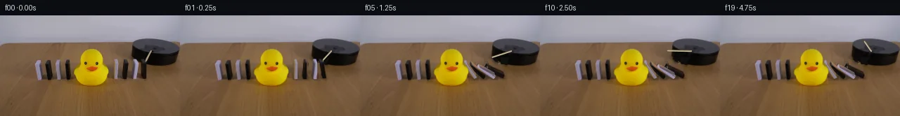

![首帧]()

Round 00
2026-11-05T01:30:41.634013+00:00像素候选变化代码 +266/−0inspection 更新
pixels f48c047abd0578de · code 14f867524644cadf
查看本轮 generate.py 真实 diff
--- previous/generate.py
+++ current/generate.py
@@ -0,0 +1,266 @@
+"""Source-only pixel continuation with analytic projected geometry; no external assets."""
+from pathlib import Path
+import math
+import numpy as np
+import cv2
+from PIL import Image, ImageDraw, ImageFilter
+from artifact_io import save
+
+ROOT = Path(__file__).resolve().parent
+S = 4
+W, H = 256, 144
+SOURCE = np.asarray(Image.open(ROOT/'first_frame.png').convert('RGB'))
+SRC_HI = cv2.resize(SOURCE, (W*S,H*S), interpolation=cv2.INTER_CUBIC)
+
+# World lengths are in screen-horizontal pixel units. A tabletop depth unit
+# projects (-1/3,-1); height projects (0,-0.86).
+HEIGHT = 27.0
+THICK = 5.0
+DEPTH = 6.0
+Z_SCALE = .86
+BASES = [(162.,91.),(175.,91.),(190.,91.),(203.,90.)]
+COLORS = ['white','black','white','black']
+
+
+def poly_mask(points, high=False):
+ scale = S if high else 1
+ out = np.zeros((H*scale,W*scale),np.uint8)
+ cv2.fillPoly(out,[np.rint(np.asarray(points)*scale).astype(np.int32)],255)
+ return out
+
+
+def vertices(i, angle):
+ x,y = BASES[i]
+ c,s = math.cos(angle),math.sin(angle)
+ a = np.array([x,y])
+ b = a + [THICK*c,-Z_SCALE*THICK*s]
+ d = a + [-HEIGHT*s,-Z_SCALE*HEIGHT*c]
+ cc = b + [-HEIGHT*s,-Z_SCALE*HEIGHT*c]
+ offset = np.array([-DEPTH/3.,-DEPTH])
+ return np.array([a,b,cc,d,a+offset,b+offset,cc+offset,d+offset])
+
+
+# The measured source has small photographic bevels and a little optical blur.
+# Remove only the moving right row and the original rod, retaining everything else.
+remove = np.zeros((H,W),np.uint8)
+for i in range(4):
+ v=vertices(i,0)
+ hull=cv2.convexHull(v.astype(np.float32))
+ cv2.fillConvexPoly(remove,np.rint(hull).astype(np.int32),255)
+remove=cv2.dilate(remove,cv2.getStructuringElement(cv2.MORPH_ELLIPSE,(3,3)))
+cv2.line(remove,(215,51),(207,65),255,3)
+clean = cv2.inpaint(SOURCE,remove,5,cv2.INPAINT_TELEA)
+
+# Restore source wood grain inside the narrow removed columns using nearby
+# tabletop detail, retaining the local low-frequency color estimated by inpainting.
+yy,xx=np.mgrid[:H,:W].astype(np.float32)
+wood_sample=cv2.remap(SOURCE,xx+7,yy+31,cv2.INTER_LINEAR,borderMode=cv2.BORDER_REFLECT)
+wood_detail=wood_sample.astype(float)-cv2.GaussianBlur(wood_sample,(0,0),2.0).astype(float)
+low=cv2.GaussianBlur(clean,(0,0),1.6).astype(float)
+wood_fill=np.clip(low+.85*wood_detail,0,255).astype(np.uint8)
+# Analytic boundary only reconstructs the black mechanism where a domino hid it.
+disk=((xx-222)/34)**2+((yy-59.5)/12.1)**2<1
+for y in range(60,73):
+ for x in range(187,256):
+ if remove[y,x] and disk[y,x]:
+ clean[y,x]=np.array([12,13,13])+(72-y)//4
+wood_area=(remove>0)&(~disk)&(yy>=60)
+clean[wood_area]=wood_fill[wood_area]
+# A narrow patch of old domino shadows is replaced with locally sampled grain.
+shadow_region=poly_mask([(155,82),(211,82),(216,95),(154,95)])
+shadow_region=cv2.GaussianBlur(shadow_region,(0,0),1.8)/255.
+shadow_region*=np.where(remove>0,0.,.50)
+# Reconstruct shadow illumination using the below-row wood sample with the source
+# image's nearby color; feather to leave the duck and platform shadows intact.
+wood_lit=wood_sample.astype(float)
+wood_lit += np.array([5.0,3.0,1.0])
+clean=np.clip(clean*(1-shadow_region[...,None])+wood_lit*shadow_region[...,None],0,255).astype(np.uint8)
+CLEAN_HI=cv2.resize(clean,(W*S,H*S),interpolation=cv2.INTER_CUBIC)
+
+# Source face quadrilaterals. Textures are sampled a fraction of a pixel inside
+# each face to avoid including background in the warped photographic material.
+FACES = {'front':[0,1,2,3],'left':[0,3,7,4],
+ 'right':[1,5,6,2],'top':[3,2,6,7]}
+TEX = {}
+for i in range(4):
+ v=vertices(i,0)
+ for key in ['front','left','top']:
… diff truncated; 179 more lines …